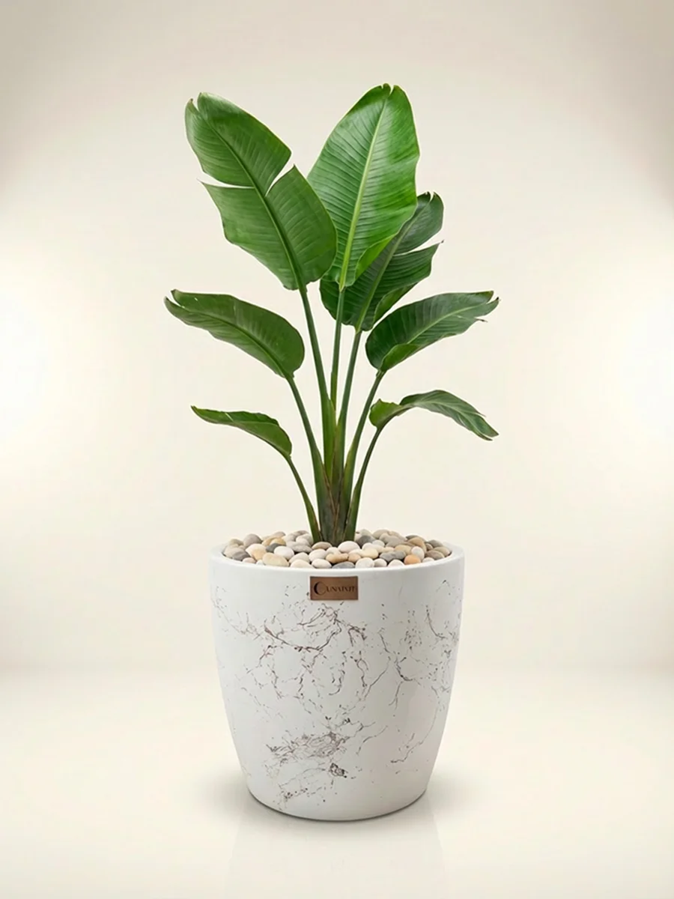
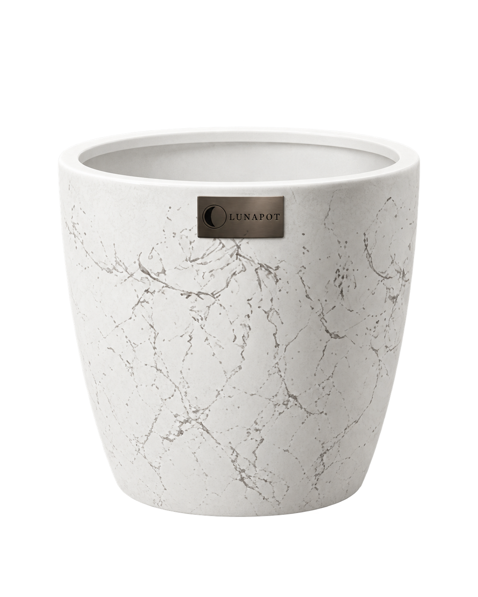

İncelen silüet
Daha dik, zarif bir gövde çizgisi.
Yukarıya açılan ağzı ve aşağıya doğru incelen gövdesiyle Luna, bitkini zarif bir silüet içinde sunar. Açık ve koyu yüzeyler aynı forma farklı bir karakter verir.
LUNA ürünlerini gör ↗İç yapısını keşfet ↓
FORM / DOKU / LUNAPOTDaha dik, zarif bir gövde çizgisi.
Cam elyaflı gövde, renk, efekt ve koruyucu yüzey.
Yetiştirme ortamı ile alt hazneyi ayıran düzen.
Önce bitkinin yerleşimine ya da saksının gövdesine bak. İki anlatımın da kendine ait bir sayfası var.

Kök, torf ve iç drenaj platformunun saksıdaki yerini keşfet. Parçaları adım adım birleştir.
Yerleşimi keşfet ↗
Fiberglass yapıdan mermer efektine, saksının gövdesini oluşturan dört katmanı yakından incele.
Katmanları keşfet ↗Bu sayfa koleksiyonun formunu ve yapısını anlatır. Boyut, yüzey seçeneği ve bitki / torf / platform gibi içeriklerin siparişe dahil olup olmadığını ürün kartında kontrol et.
Seçenekleri incele ↗